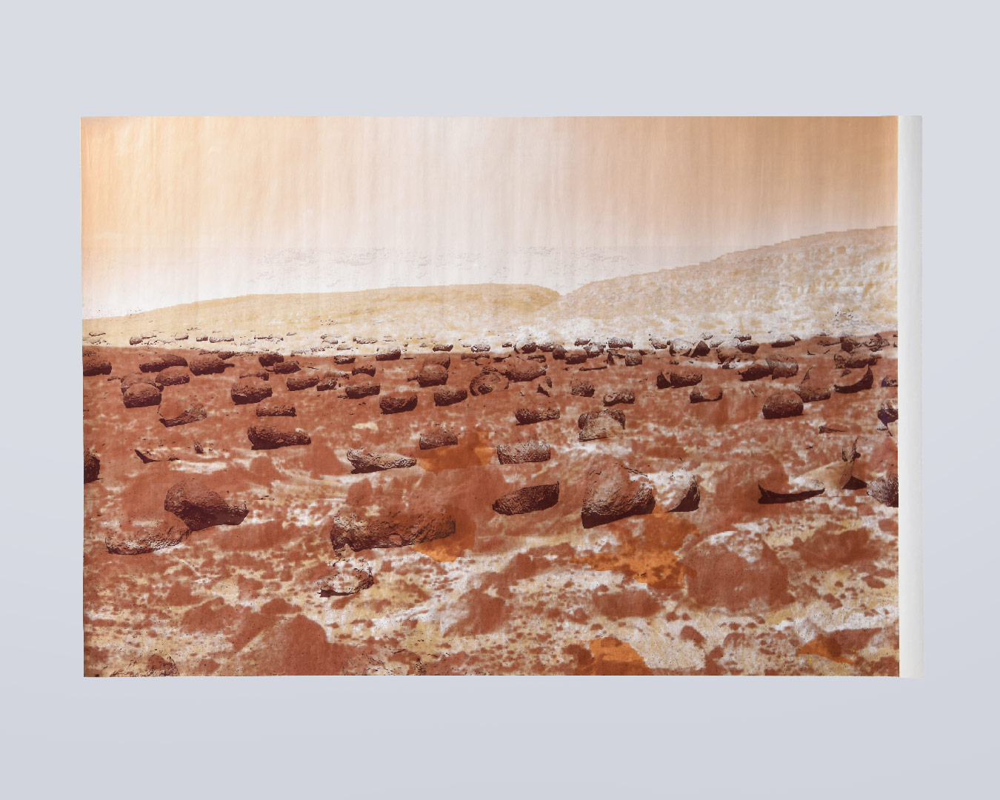
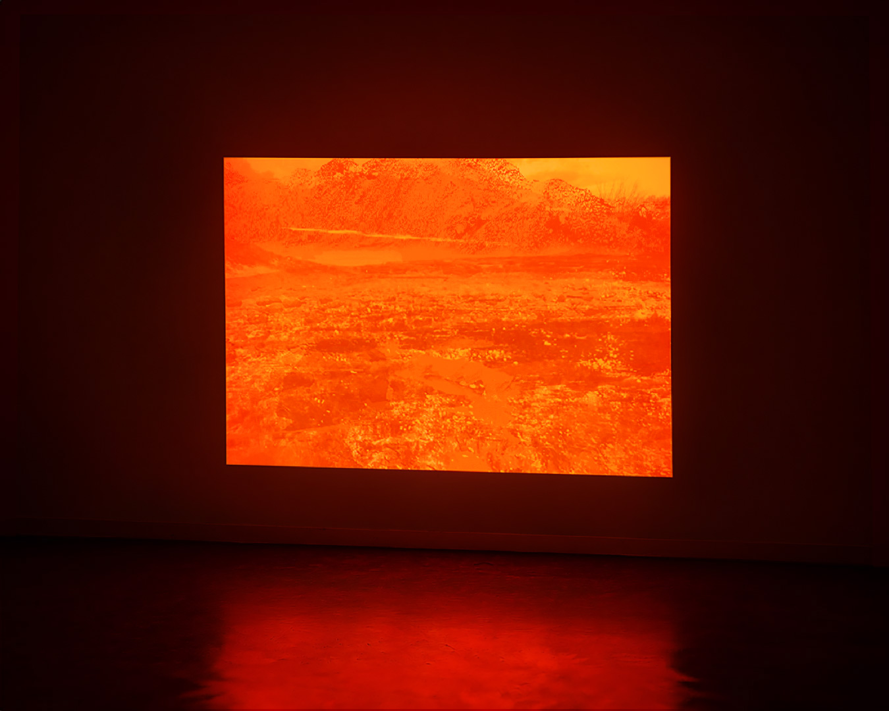

index | shop | info | contact | chaos
Imaginary Landscape is a series of visual studies based on images of uninhabited land. The compositions combine isolated elements into layered landscapes, forming abstract, familiar visuals that resist precise location, much like film backdrops.
Presented in print, video, and an essay, the work reflects on landscape as a visual construction and a way of representing non-specific space through perspective.
Imaginary Landscape, De Fabriek↗ (Eindhoven, 2020) | Glass, paper, UV print


excerpt from A Dazzling Gleam (2020)
"In 1344, Ambrogio Lorenzetti painted an Annunciation for Siena's Palazzo Pubblico.
A century before the invention of perspective, Lorenzetti nearly achieved a working perspective with the painted floor tiles.
Daniel Arasse often discussed annunciations as a key theme for exploring perspective in painting.
In a series of interviews with France Culture in 2019, Arasse provided examples of Annunciation paintings that question the use of perspective and its religious implications.
These works challenge the representation of a world comprehensible to humans, in contrast to the incarnation of an incomprehensible God.
The art historian explains how, in the 15th century, perspective was used to illustrate the incommensurability of God, often by subtly distorting proportions, architectural elements, or placements within the Annunciation—along with the use of text and typography—to achieve a sense of ontological realism."
Imaginary Landscape, De Fabriek↗ (Eindhoven, 2020) | Film | 6min 54s

*This website was last updated on July 1, 2026.